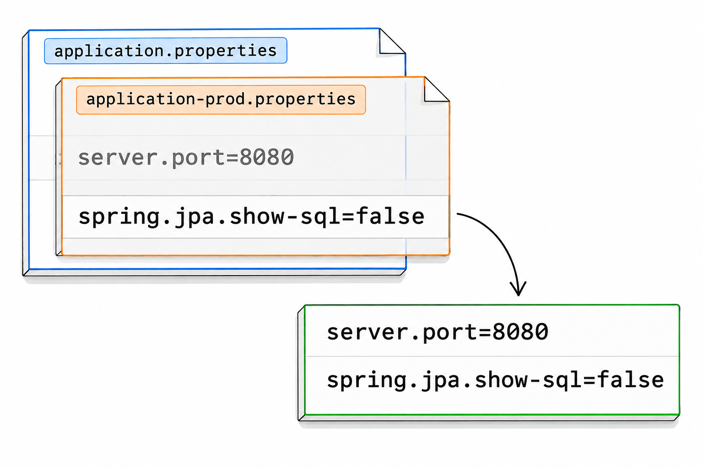
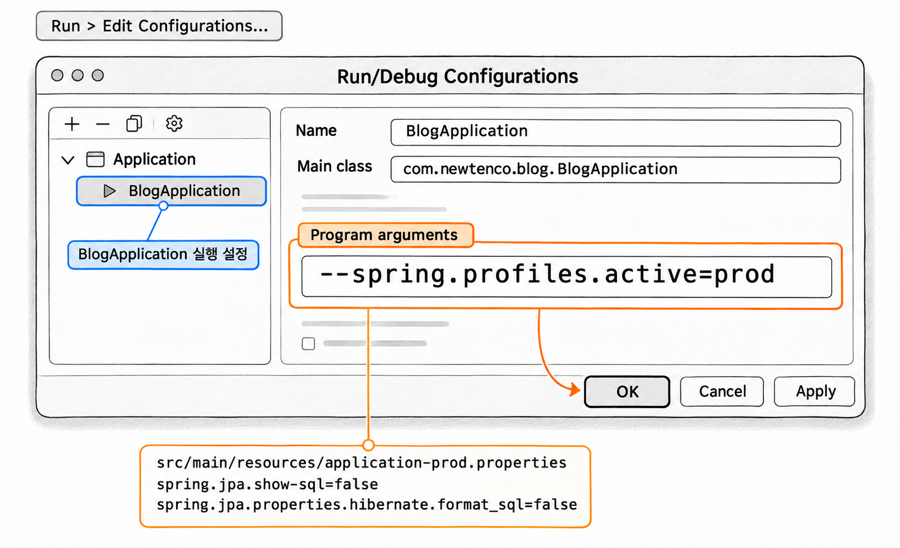

21장. 프로필이란?
1. 프로필의 개념
1.1 환경마다 설정이 달라지는 이유
지금까지 만든 블로그 API는 설정 파일 하나로 실행했습니다. application.properties에는 다음 설정이 함께 들어 있습니다.
- H2 메모리 DB 주소
- H2 콘솔 켜기
- 실행한 SQL 출력
- 서버를 켤 때마다 테이블을 새로 만드는
ddl-auto=create - 샘플 데이터를 넣는
data.sql
모두 개발할 때 편하라고 넣은 설정입니다.
서버를 실제 사용자에게 내놓으면 사정이 달라집니다. 데이터는 서버를 다시 켜도 남아 있어야 하므로 메모리 DB 대신 외부 DB를 씁니다. 외부 DB는 별도 컴퓨터에서 돌아갑니다. 운영 서버에 ddl-auto=create가 남아 있으면 서버를 다시 켤 때마다 테이블이 지워지고 회원과 글이 모두 사라집니다. H2 콘솔은 누구나 DB를 들여다볼 수 있는 문이 되고, SQL 출력은 로그만 늘립니다.
| 설정 | 개발할 때 | 운영할 때 |
|---|---|---|
| 데이터베이스 | H2 메모리 DB | 외부 DB(후속 과정의 RDS 등) |
ddl-auto | create(매번 새로 만듦) | validate(검사만 함) |
| H2 콘솔 | 켬 | 끔 |
| SQL 출력 | 켬 | 끔 |
| 샘플 데이터 | data.sql로 넣음 | 넣지 않음 |
| CORS 허용 출처 | localhost:5173 | 실제 프런트엔드 주소 |
환경이 바뀔 때마다 설정 파일을 손으로 고치면 실수가 생깁니다. create를 validate로 바꾸는 일을 한 번만 잊어도 운영 데이터가 날아갑니다. 그래서 환경별 설정을 파일로 따로 적어 두고, 실행할 때는 어느 환경인지 이름만 골라 줍니다. Spring Boot에서는 이 이름을 프로필(profile)이라고 합니다. 프로필은 "어떤 환경으로 실행하는가"를 나타내는 이름표이고, 이름은 개발자가 정합니다. 이 책에서는 개발용을 dev, 운영용을 prod라고 부릅니다.
1.2 application-{프로필}.properties와 적용 순서
프로필별 설정은 application-프로필이름.properties 파일에 적습니다. 파일 위치는 application.properties와 같은 src/main/resources 폴더입니다.
기본 문법
src/main/resources/application.properties 모든 환경의 공통 설정
src/main/resources/application-프로필이름.properties 그 프로필로 실행할 때만 쓰는 설정Spring Boot는 시작할 때 두 파일을 다음 순서로 읽습니다.
application.properties를 읽습니다. 이 파일은 프로필과 상관없이 항상 적용됩니다.- 활성 프로필이 있으면
application-프로필이름.properties를 읽어 공통 설정 위에 덧붙입니다. - 같은 키가 두 파일에 모두 있으면 프로필 파일의 값을 씁니다.
- 프로필 파일에 없는 키는 공통 설정의 값이 그대로 남습니다.
활성 프로필(active profile)은 이번 실행에서 켠 프로필입니다. 활성 프로필이 아닌 프로필 파일은 폴더에 있어도 읽지 않습니다.

그림 21-1처럼 프로필 파일에는 공통 설정과 달라지는 키만 적으면 됩니다. 프로필을 둘 이상 켤 수도 있습니다. 이때 같은 키는 나중에 적은 프로필의 값이 이깁니다.
덮어쓰기가 어떻게 동작하는지 작은 파일로 확인합니다. 운영 환경에서는 SQL을 출력하지 않을 것이므로 prod 프로필 파일에 SQL 출력을 끄는 두 줄만 적습니다.
예제 21-1 — prod 프로필 파일 만들기
이어서: 예제 19-8
파일명: src/main/resources/application-prod.properties
spring.jpa.show-sql=false
spring.jpa.properties.hibernate.format_sql=false실행 결과
서버를 끄고 지금까지처럼 .\gradlew.bat bootRun으로 다시 실행합니다. 시작 로그에 Hibernate: drop table if exists ...와 create table ... 같은 SQL이 전과 똑같이 나옵니다. Postman으로 GET http://localhost:8080/api/boards를 보내도 터미널에 select 문이 출력됩니다.
파일을 만들었는데 아무것도 바뀌지 않았습니다. 아직 prod 프로필을 켜지 않았기 때문입니다. 프로필 파일은 그 프로필이 활성일 때만 읽힙니다. 프로필을 켜는 방법은 2절에서 다룹니다.
2. 프로필로 실행하기
2.1 spring.profiles.active
활성 프로필은 spring.profiles.active 설정으로 정합니다. 값에는 프로필 이름을 적고, 여러 개를 켤 때는 쉼표로 잇습니다.
기본 문법
spring.profiles.active=프로필이름
spring.profiles.active=프로필이름1,프로필이름2이 키도 설정값이므로 application.properties에 적을 수 있습니다. 하지만 공통 설정 파일에 spring.profiles.active=prod를 적어 두면, 개발할 때도 파일을 고쳐야 dev로 실행됩니다. 파일을 고치지 않고 환경을 바꾸려고 프로필을 쓰는 것이므로 이 방식은 피합니다. 활성 프로필은 설정 파일 밖, 곧 서버를 실행하는 쪽에서 정합니다.
설정 파일 밖에서 넘긴 값은 application.properties의 값보다 우선합니다. 그래서 공통 설정 파일에 무엇이 적혀 있든 실행할 때 넘긴 프로필이 쓰입니다. 실행할 때 값을 넘기는 방법에는 명령줄 인수와 환경 변수가 있습니다. 이 장에서는 명령줄 인수를 쓰고, 환경 변수는 22장에서 다룹니다.
spring.profiles.active는 프로필 파일(application-prod.properties 등) 안에는 적을 수 없습니다. 프로필 파일은 프로필이 정해진 다음에 읽히는 파일입니다. 그 안에서 프로필을 다시 정하면 서버가 오류를 내고 시작하지 않습니다.
2.2 bootRun --args와 IntelliJ 실행 설정
gradlew.bat bootRun은 --args 옵션에 적은 문자열을 애플리케이션의 명령줄 인수로 넘깁니다. Spring Boot는 --키=값 모양의 명령줄 인수를 설정값으로 읽습니다. 그래서 다음처럼 실행하면 prod 프로필이 켜집니다.
.\gradlew.bat bootRun --args="--spring.profiles.active=prod"실행 결과
시작 로그에 나오던 drop table · create table SQL이 보이지 않습니다. Postman으로 GET http://localhost:8080/api/boards를 보내면 글 목록은 전과 같이 200으로 돌아오지만, 터미널에 select 문이 출력되지 않습니다.
예제 21-1의 두 줄이 공통 설정의 show-sql=true와 format_sql=true를 덮었습니다. 글 목록이 그대로 나오는 것은 application-prod.properties에 데이터베이스 설정이 없어서 공통 설정의 H2 설정이 그대로 쓰였기 때문입니다. 1.2에서 본 순서대로 덮은 키만 바뀌고 나머지는 남습니다.
IntelliJ IDEA의 실행 버튼으로 서버를 켤 때는 실행 설정에 같은 인수를 적습니다. 메뉴에서 Run > Edit Configurations...를 열고 BlogApplication 실행 설정을 고릅니다. Program arguments 칸에 --spring.profiles.active=prod를 적고 OK를 누릅니다. IntelliJ IDEA Ultimate의 Spring Boot 실행 설정에는 Active profiles 칸이 따로 있어서, 이 칸에 prod만 적어도 됩니다.

생성형 예시 · 실제 실행 안 함
실행 설정은 IntelliJ IDEA 안에만 저장되며 PowerShell의 bootRun과는 상관없습니다. 이 책은 계속 PowerShell에서 실행하므로, 확인이 끝나면 Program arguments 칸을 비워 둡니다.
2.3 실행 로그로 활성 프로필 확인
설정이 바뀐 결과만 보고 프로필이 켜졌는지 짐작하면 틀리기 쉽습니다. 확실히 확인하려면 시작 로그를 봅니다. Spring Boot는 서버를 시작할 때 활성 프로필을 로그 한 줄로 알려 줍니다. prod로 실행하면 로그 앞부분에 다음 줄이 나옵니다.
실행 결과
com.newtenco.blog.BlogApplication : The following 1 profile is active: "prod"줄 앞의 시각, 프로세스 번호, 스레드 이름은 실행할 때마다 다릅니다. 뒷부분은 "프로필 1개가 활성이고, 그 이름은 prod"라는 뜻입니다. 프로필 이름을 prd처럼 잘못 적어도 서버는 오류 없이 시작합니다. 이때 로그에는 "prd"가 찍히고, 그런 이름의 파일이 없으니 공통 설정만 적용됩니다. 프로필을 바꿔 실행했다면 이 줄부터 확인하는 습관을 들입니다.
--args 없이 .\gradlew.bat bootRun으로 실행하면 같은 자리에 다른 줄이 나옵니다.
실행 결과
com.newtenco.blog.BlogApplication : No active profile set, falling back to 1 default profile: "default"활성 프로필이 없어서 기본 프로필인 default를 쓴다는 뜻입니다. 기본 프로필은 다음 항에서 다룹니다.
2.4 기본 프로필(spring.profiles.default)
기본 프로필(default profile)은 활성 프로필을 하나도 정하지 않았을 때 대신 쓰는 프로필입니다. 따로 정하지 않으면 이름은 default입니다. 프로젝트에 application-default.properties 파일이 없으므로, 지금까지는 프로필 없이 실행하면 공통 설정만 적용되었습니다.
기본 프로필의 이름은 spring.profiles.default로 바꿀 수 있습니다.
기본 문법
spring.profiles.default=프로필이름spring.profiles.active와 달리 이 키는 application.properties에 적어도 문제가 없습니다. 실행할 때 프로필을 넘기면 그 프로필이 쓰이고, 아무것도 넘기지 않았을 때만 이 값이 쓰이기 때문입니다. 3절에서는 이 키를 dev로 정합니다. 그러면 지금까지처럼 .\gradlew.bat bootRun만 입력해도 개발용 설정으로 실행되고, 운영용 설정은 prod를 직접 넘겼을 때만 켜집니다. 실수로 프로필을 빠뜨려도 운영 설정이 아니라 개발 설정으로 실행되므로 안전합니다.
3. 개발용과 운영용 설정 나누기
3.1 공통 설정과 dev 설정(H2 · 콘솔 · show-sql · data.sql)
지금의 application.properties에는 개발에만 맞는 설정이 섞여 있습니다. 1.1의 표를 기준으로 설정을 두 파일로 나눕니다.
| 설정 | 둘 곳 | 이유 |
|---|---|---|
server.port · 인코딩 | 공통 | 환경과 상관없이 같음 |
spring.profiles.default | 공통 | 프로필이 정해지기 전에 읽혀야 함 |
spring.jpa.open-in-view=false | 공통 | 6장에서 정한 계층 구조의 규칙이라 환경마다 달라지지 않음 |
app.cors.* · app.jwt.* | 공통 | 값은 환경마다 다를 수 있지만 키는 모든 환경에 필요함 |
| H2 데이터소스 · H2 콘솔 | dev | 메모리 DB는 개발용 |
ddl-auto=create · SQL 출력 | dev | 데이터를 지우고 로그를 늘림 |
data.sql · defer-datasource-initialization | dev | 샘플 데이터는 개발용 |
예제 21-2 — 공통 설정과 dev 설정 나누기
이어서: 예제 21-1
파일명: src/main/resources/application.properties
server.port=8080
spring.servlet.encoding.charset=UTF-8
spring.servlet.encoding.force=true
spring.profiles.default=dev
spring.jpa.open-in-view=false
app.cors.allowed-origins=http://localhost:5173
app.jwt.secret=newtenco-blog-jwt-secret-key-must-be-at-least-64-bytes-long-0123456789
app.jwt.expiration-time=86400000파일명: src/main/resources/application-dev.properties
spring.datasource.driver-class-name=org.h2.Driver
spring.datasource.url=jdbc:h2:mem:test
spring.datasource.username=sa
spring.datasource.password=
spring.h2.console.enabled=true
spring.jpa.hibernate.ddl-auto=create
spring.jpa.show-sql=true
spring.jpa.properties.hibernate.format_sql=true
spring.sql.init.data-locations=classpath:db/data.sql
spring.jpa.defer-datasource-initialization=true실행 결과
서버를 끄고 .\gradlew.bat bootRun으로 다시 실행합니다. 시작 로그에 다음 줄들이 나타납니다.
com.newtenco.blog.BlogApplication : No active profile set, falling back to 1 default profile: "dev"
H2 console available at '/h2-console'. Database available at 'jdbc:h2:mem:test'drop table · create table SQL도 전과 같이 출력됩니다. Postman으로 GET http://localhost:8080/api/boards를 보내면 샘플 글이 담긴 목록이 200으로 돌아옵니다. .\gradlew.bat bootRun --args="--spring.profiles.active=dev"로 실행하면 첫 줄이 The following 1 profile is active: "dev"로 바뀌고 나머지는 같습니다.
app.jwt.* 두 줄은 12장에서 넣은 키와 값을 그대로 옮깁니다. 키 이름이 바뀌면 @Value가 값을 찾지 못해 서버가 시작되지 않습니다. 그래서 이 장에서는 위치만 옮기고 글자는 바꾸지 않습니다. app.cors.allowed-origins는 이 장에서 새로 만든 키입니다. 13장부터 SecurityConfig에 직접 적어 온 허용 출처를 설정 파일로 옮겨, 환경마다 다른 값을 넣을 수 있게 합니다. SecurityConfig가 이 키를 읽게 바꾸는 일은 3.3에서 합니다.
로그의 falling back to 1 default profile: "dev"가 2.4에서 정한 기본 프로필입니다. 프로필을 넘기지 않았는데도 application-dev.properties가 적용되어 H2와 샘플 데이터가 전처럼 준비됩니다. 설정 파일은 둘로 나뉘었지만 개발하는 방법은 바뀌지 않습니다.
H2 콘솔 설정을 dev로 옮겼다고 해서 운영에서 콘솔이 꺼지는 것은 아닙니다. 1장에서 넣은 devtools는 bootRun처럼 개발 중에 실행하면 H2 콘솔을 켜는 기본값을 스스로 넣습니다. 그래서 운영 설정에서 콘솔을 확실히 끄려면 다음 항처럼 prod 파일에 false를 직접 적어야 합니다. 파일에 적은 값은 devtools의 기본값보다 우선합니다.
3.2 prod 설정(외부 DB 접속 자리 · ddl-auto)
운영 환경은 외부 DB에 연결합니다. 실제 DB는 후속 과정에서 AWS RDS로 만들므로, 지금은 접속 정보가 들어갈 자리만 만들어 둡니다. 예제 21-1의 prod 파일을 운영용 설정으로 채웁니다.
예제 21-3 — prod 설정 채우기
이어서: 예제 21-2
파일명: src/main/resources/application-prod.properties
spring.datasource.url=jdbc:mysql://db-host:3306/blog
spring.datasource.username=blog_user
spring.datasource.password=change-me
spring.h2.console.enabled=false
spring.jpa.hibernate.ddl-auto=validate
spring.jpa.show-sql=false
app.cors.allowed-origins=https://blog.example.comdb-host, blog_user, change-me, blog.example.com은 실제 값이 들어갈 자리를 표시한 값입니다. 실제 DB 주소와 계정을 받으면 이 자리를 바꿉니다. 드라이버 클래스는 적지 않았습니다. Spring Boot가 jdbc:mysql:로 시작하는 주소를 보고 맞는 드라이버를 고르기 때문입니다.
data.sql 관련 두 줄은 prod에 없습니다. 공통 설정에도 없으므로 운영 환경에서는 샘플 데이터를 넣지 않습니다. CORS 허용 출처는 같은 키를 prod에 다시 적어서, 공통 설정의 localhost:5173을 실제 프런트엔드 주소로 덮었습니다.
ddl-auto는 Hibernate가 시작할 때 엔티티를 보고 테이블을 어떻게 다룰지 정합니다.
| 값 | 시작할 때 하는 일 | 쓰는 곳 |
|---|---|---|
create | 테이블을 지우고 새로 만듦 | 개발(이 책의 dev) |
create-drop | create와 같고, 끝날 때 테이블을 지움 | 테스트 |
update | 엔티티에 맞게 테이블을 고침 | 혼자 하는 개발 |
validate | 테이블이 엔티티와 맞는지 검사만 함 | 운영 |
none | 아무것도 하지 않음 | 운영 |
운영에서 create를 쓰면 서버를 다시 켤 때마다 데이터가 모두 사라집니다. update는 데이터를 지우지는 않지만, Hibernate가 운영 테이블의 구조를 직접 바꾸므로 의도하지 않은 변경이 생길 수 있습니다. 그래서 운영 DB의 테이블은 SQL로 직접 만들고 관리합니다. validate는 그 테이블이 엔티티와 어긋나면 서버를 시작하지 않고 멈춥니다. 엔티티에 필드를 추가하고 테이블에 열을 추가하는 일을 잊었다면, 사용자가 오류를 만나기 전에 배포 단계에서 문제를 알게 됩니다.
ddl-auto를 적지 않으면 Spring Boot가 기본값을 정합니다. H2 같은 내장 DB에는 create-drop, 외부 DB에는 none을 씁니다. 기본값에 맡기지 않고 validate를 직접 적은 것은 운영 파일만 읽어도 테이블을 어떻게 다루는지 알 수 있게 하려는 것입니다.
이제부터는 prod 프로필로 서버를 실행하지 않습니다. 2.2에서 prod로 실행할 수 있었던 것은 공통 설정에 H2 설정이 있었기 때문입니다. 지금은 H2 설정이 dev로 옮겨졌고, prod는 아직 없는 외부 DB를 가리킵니다. 프로젝트에는 MySQL 드라이버 의존성도 없습니다. 이 상태로 prod를 켜면 데이터베이스에 연결해 보기도 전에 Failed to load driver class com.mysql.cj.jdbc.Driver 오류를 내고 서버가 시작 도중에 멈춥니다. Spring Boot가 주소를 보고 MySQL 드라이버를 골랐지만, 그 드라이버가 프로젝트에 없기 때문입니다. 드라이버 추가와 실제 DB 연결은 후속 과정에서 RDS를 만들 때 합니다.
3.3 CORS 허용 출처를 설정값으로 받기
예제 21-2와 21-3에서 app.cors.allowed-origins 키를 공통 설정과 prod 설정에 적었습니다. 그런데 SecurityConfig는 13장부터 허용 출처를 List.of("http://localhost:5173")로 코드에 직접 적고 있습니다. 이대로면 prod 파일에 실제 프런트엔드 주소를 적어도 서버는 계속 localhost:5173만 허용합니다.
그래서 SecurityConfig가 이 키를 읽게 바꿉니다. SecurityConfig는 JwtUtil을 @RequiredArgsConstructor가 만든 생성자로 받고 있습니다. 2장 4.2에서 본 것처럼 Lombok이 만든 생성자에는 @Value가 옮겨 가지 않으므로, 허용 출처는 final이 아닌 필드에 @Value를 붙여 받습니다. 필드 타입을 List<String>으로 두면, 설정값에 쉼표로 출처를 여러 개 적었을 때 스프링이 나눠서 목록으로 넣어 줍니다.
예제 21-4 — 허용 출처를 설정값으로 받기
이어서: 예제 21-3
파일명: src/main/java/com/newtenco/blog/core/SecurityConfig.java
package com.newtenco.blog.core;
import com.newtenco.blog.core.filter.JwtAuthorizationFilter;
import com.newtenco.blog.core.util.JwtUtil;
import com.newtenco.blog.core.util.RespFilter;
import lombok.RequiredArgsConstructor;
import org.springframework.beans.factory.annotation.Value;
import org.springframework.context.annotation.Bean;
import org.springframework.context.annotation.Configuration;
import org.springframework.http.HttpMethod;
import org.springframework.security.config.annotation.web.builders.HttpSecurity;
import org.springframework.security.config.http.SessionCreationPolicy;
import org.springframework.security.crypto.bcrypt.BCryptPasswordEncoder;
import org.springframework.security.crypto.password.PasswordEncoder;
import org.springframework.security.web.SecurityFilterChain;
import org.springframework.security.web.authentication.UsernamePasswordAuthenticationFilter;
import org.springframework.web.cors.CorsConfiguration;
import org.springframework.web.cors.CorsConfigurationSource;
import org.springframework.web.cors.UrlBasedCorsConfigurationSource;
import java.util.List;
@RequiredArgsConstructor
@Configuration
public class SecurityConfig {
private final JwtUtil jwtUtil;
@Value("${app.cors.allowed-origins}")
private List<String> allowedOrigins;
@Bean
public PasswordEncoder passwordEncoder() {
return new BCryptPasswordEncoder();
}
@Bean
public CorsConfigurationSource corsConfigurationSource() {
CorsConfiguration config = new CorsConfiguration();
config.setAllowedOrigins(allowedOrigins);
config.setAllowedMethods(List.of("GET", "POST", "PUT", "DELETE", "OPTIONS"));
config.addAllowedHeader("*");
config.setExposedHeaders(List.of("Authorization", "Refresh-Token"));
UrlBasedCorsConfigurationSource source = new UrlBasedCorsConfigurationSource();
source.registerCorsConfiguration("/**", config);
return source;
}
@Bean
public SecurityFilterChain filterChain(HttpSecurity http) throws Exception {
http.headers(headers -> headers.frameOptions(frame -> frame.sameOrigin()));
http.cors(cors -> cors.configurationSource(corsConfigurationSource()));
http.csrf(csrf -> csrf.disable());
http.formLogin(form -> form.disable());
http.httpBasic(basic -> basic.disable());
http.logout(logout -> logout.disable());
http.sessionManagement(session -> session.sessionCreationPolicy(SessionCreationPolicy.STATELESS));
http.addFilterBefore(new JwtAuthorizationFilter(jwtUtil), UsernamePasswordAuthenticationFilter.class);
http.exceptionHandling(ex -> ex
.authenticationEntryPoint((req, res, e) -> RespFilter.fail(res, 401, "로그인 후 이용해주세요"))
.accessDeniedHandler((req, res, e) -> RespFilter.fail(res, 403, "권한이 없습니다")));
http.authorizeHttpRequests(auth -> auth
.requestMatchers(HttpMethod.OPTIONS, "/**").permitAll()
.requestMatchers("/join", "/login", "/check-username").permitAll()
.requestMatchers(HttpMethod.POST, "/reissue", "/logout").permitAll()
.requestMatchers("/h2-console/**").permitAll()
.requestMatchers("/api/admin/**").hasRole("ADMIN")
.requestMatchers(HttpMethod.GET, "/api/boards/**").permitAll()
.requestMatchers("/api/**").hasAnyRole("USER", "ADMIN")
.anyRequest().denyAll()
);
return http.build();
}
}실행 결과
.\gradlew.bat bootRun으로 서버를 다시 실행하면 dev 프로필로 뜹니다. 13장 예제 13-1처럼 Postman에서 OPTIONS http://localhost:8080/login에 Origin: http://localhost:5173 등 헤더 세 개를 넣어 보내면 응답 헤더에 다음 줄이 보입니다.
Access-Control-Allow-Origin: http://localhost:5173Origin을 http://localhost:4000으로 바꿔 보내면 13장과 같이 403과 Invalid CORS request가 옵니다.
응답은 13장과 같지만, 허용 출처를 정하는 곳이 코드에서 설정 파일로 옮겨졌습니다. dev로 실행하면 공통 설정의 http://localhost:5173이, prod로 실행하면 prod 파일의 https://blog.example.com이 쓰입니다. 바뀐 곳은 @Value 필드와 setAllowedOrigins(allowedOrigins) 두 군데뿐이고, 나머지 보안 규칙은 19장 예제 19-8과 같습니다. 키 이름을 잘못 적으면 2장에서 본 Could not resolve placeholder 오류로 서버가 시작되지 않습니다. 앞으로 나오는 SecurityConfig 예제는 모두 이 필드로 허용 출처를 받습니다.
설정 파일에는 아직 문제가 하나 남아 있습니다. prod 파일 안에 DB 비밀번호 자리가 있고, 공통 설정에는 JWT 비밀키가 그대로 적혀 있습니다. 두 파일은 코드와 함께 저장소에 올라가므로 비밀값을 여기에 두면 안 됩니다. 22장에서는 JwtUtil 코드는 그대로 두고, 이 값들만 환경 변수에서 읽도록 바꿉니다.